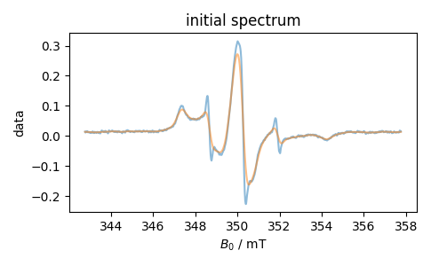
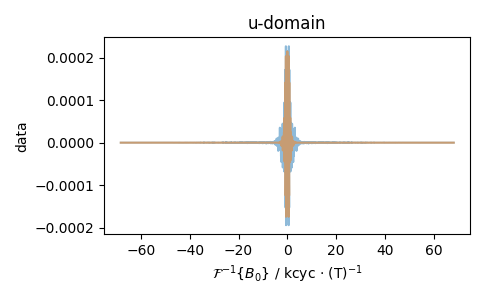

Note
Go to the end to download the full example code
EPR u-domain¶
Show the \(u\)-domain in EPR.
We use this to demonstrate:
setting the defaults for FT shift vs. not
units that appear OK in the plot, even when the initial domain is frequency and conjugate is inverse domain
successful convolution, even with really weird FT startpoints
- 
- 
---------- logging output to /home/jmfranck/pyspecdata.0.log ----------
1: initial spectrum |||mT
2: u-domain |||kcyc · (T)$^{-1}$
--> _mathtext.py(648):matplotlib.mathtext _get_glyph 2025-07-08 14:55:19,900
INFO: Substituting symbol F from STIXNonUnicode
--> _mathtext.py(648):matplotlib.mathtext _get_glyph 2025-07-08 14:55:20,252
INFO: Substituting symbol F from STIXNonUnicode
import pyspecdata as psd
import re
psd.init_logging(level="debug")
Bname = "$B_0$"
d = psd.find_file(re.escape("220307_S175_KCl.DSC"),
exp_type="francklab_esr/Farhana")
d.chunk_auto("harmonic")
d = d["harmonic", 0]["phase", 0]
d[Bname] *= 1e-4
d.set_units(Bname, "T")
d.set_ft_initial(Bname, "f").set_ft_prop(Bname, "time_not_aliased")
with psd.figlist_var() as fl:
fl.next("initial spectrum", figsize=(3 * 1.618, 3))
fl.plot(d)
fl.next("u-domain", figsize=(3 * 1.618, 3))
d.ift(Bname)
fl.plot(d)
fl.next("initial spectrum")
d.ft(Bname)
d.convolve(Bname, 3e-4, enforce_causality=False) # smooth by 1 G
fl.plot(d)
fl.next("u-domain")
d.ift(Bname)
fl.plot(d)
Total running time of the script: (0 minutes 0.692 seconds)